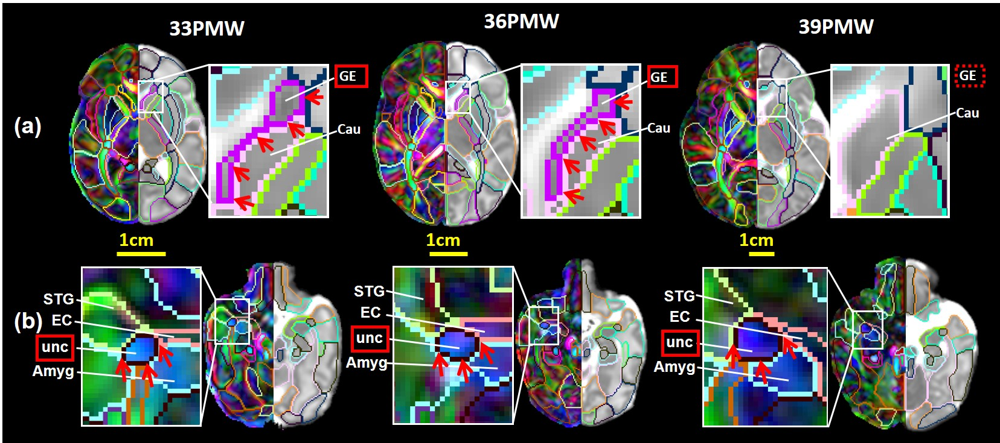

Details of the Data
The Penn-CHOP age-specific neonate atlas package below includes volume image of atlas labels, DTI fractional anisotropy (FA) map, DTI orientation-encoded colormap (OEC) and mean diffusivity (MD) map for the human neonate brains at 33, 36 and 39 postmenstrual weeks (PMW) at scan. Except for atlas labels, both single-subject and population-averaged DTI FA, OEC and MD maps for each PMW are presented. The atlas labels of each PMW were established based on the single-subject template. All maps and atlas labels are in the template space and have the same dimension and resolution with details below. More details on establishing the Penn-CHOP age-specific neonate atlas can be found in the publication below.
Image dimension of DTI maps and atlas labels of all PMW: 180x220x180
Resolution: 0.6x0.6x0.6 mm3
Publication
Feng L, Li H, Oishi K, Mishra V, Song L, Peng Q, Ouyang M, Wang J, Slinger M, Jeon T, Lee L, Heyne R, Chalak L, Peng Y, Liu S, Huang H, 2019. Age-specific gray and white matter DTI atlas for human brain at 33, 36 and 39 postmenstrual weeks. Neuroimage 185: 685-698.
[Pubmed]
Licence
Copyright (C) Department of Radiology, Children's Hospital of Philadelphia,
and Department of Radiology, Perelman School of Medicine, University of Pennsylvania, PA, USA.
All rights reserved.
“Penn-CHOP age-specific neonate atlas package” is a free atlas package. “Penn-CHOP age-specific neonate atlas package” is distributed in the hope that it will be useful, but without any warranty; without even the implied warranty of merchantability or fitness for a particular purpose.
“Penn-CHOP age-specific neonate atlas package” should only be used for scientific purposes. It CAN NOT be used for commercial purposes. It SHOULD NOT be used for medical purposes. The authors WILL NOT be responsible for using it in medical conditions.
Data Download
To download the data, please fill out this google form. Download link will be available after.